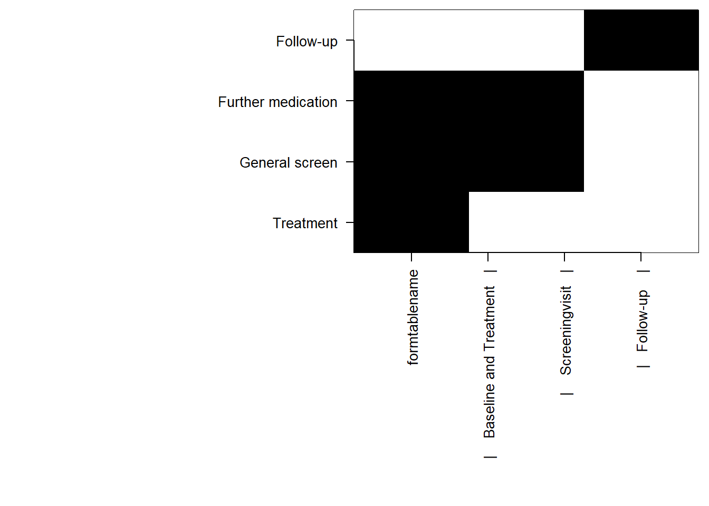

Working with statistical software is the daily business of our statisticians. Most software languages allow their users to create their own packages of custom functions to reduce errors in repeated tasks. The software used by SCTO statisticians, primarily R and Stata, are no different in this respect. This page provides an overview of some.
SCTO funded packages
The SCTO Statistics and Methodology platform offers grants to associated statistics specifically for the development of such statistical packages, either for the development of completely new software, or the further development of existing software.
presize - precision based sample size estimation
presize is an R package for precision based sample size calculation. It provides a large number of methods for estimating the number of samples required to gain a confidence interval of a given width, or the width that might be expected with a given sample size.
Example
Assuming that we want to estimate the confidence interval (CI) around the sensitivity of a test, but we’re not sure of the sensitivity, we can estimate the CI width in a range of scenarios as follows.
Code
library(presize)# set up a range of scenariosscenarios <-expand.grid(sens =seq(.5, .95, .1),prev =seq(.1, .2, .04),ntot =c(250, 350))# calculate the CI width at ntot individuals with prev prevalence of eventscenario_data <-prec_sens(sens = scenarios$sens, prev = scenarios$prev, ntot = scenarios$ntot, method ="wilson")# plot the scenarios with ggplot2scenario_df <-as.data.frame(scenario_data)library(ggplot2)ggplot(scenario_df, aes(x = sens, y = conf.width, # convert colour to factor for distinct colours rather than a continuumcol =as.factor(prev), group = prev)) +geom_line() +labs(x ="Sensitivity", y ="CI width", col ="Prevalence") +facet_wrap(vars(ntot))
For ease of use, presize also includes a shiny app for point-and-click use, which is also available on the internet.
Installation
presize can be installed in R via the following methods:
# from CRAN (the stable version)
install.packages("presize")
# from CTU Bern's package universe (the development version)
install.packages("presize", repos = "https://ctu-bern.r-universe.dev/")
redcaptools - a package for working with REDCap data in R
REDCap is a popular database for clinical research, used by many of the CTUs in Switzerland. One aggravation with REDCap data exports is that the data is in one file which can contain a lot of empty cells when more complicated database designs are used. redcaptools has tools to automatically pull the database apart into forms for easier use. Similar to secuTrialR, it also labels variables, and prepares date and factor variables. The function is primarily for interacting with REDCap via the Application Programming Interface (API), allowing easy scripted exports.
Example
By supplying the API token generated by REDCap, together with the APIs URL, the redcap_export_byform function can be used to export all data from the database by form. Each form is returned as an element of a list.
This function can also be used to export various other API endpoints (e.g. various types of metadata etc, specific forms).
The data can then be formatted by using the metadata and the rc_prep function
prepped <-rc_prep(dat, meta)
Installation
redcaptools can be installed in R via the following methods:
# from CTU Bern's package universe (the development version)
install.packages("redcaptools", repos = "https://ctu-bern.r-universe.dev/")
# from github
remotes::install_github("CTU-Bern/redcaptools")
selcorr - post-selection inference for generalized linear models
selcorr calculates (unconditional) post-selection confidence intervals and p-values for the coefficients of (generalized) linear models.
# from CRAN (the stable version)
install.packages("selcorr")
sse - sample size estimation
sse is another R package for sample size calculation that has been in use at CTU Basel for many years. It’s approach is very general, allowing a wide range of scenarios to be assessed rapidly. Where presize is rather for precision-based calculations, sse is rather for hypothesis testing, although it is general enough that it can be used for both frameworks.
Example
We want to find the sample size for comparing two means. We are unsure of the standard deviation to expect, so we assess the sample size across a range of standard deviations. Assuming that a standard deviation of 12 is appropriate in this case, and we want a power of 90%, we can plot the power curve:
Code
library(sse)## defining the range of n and theta to be evaluatedpsi <-powPar(# SD valuestheta =seq(from =5, to =20, by =1),# sample sizesn =seq(from =5, to =50, by =2),# group meansmuA =0,muB =20)## define a function to return the power in each scenariopowFun <-function(psi){power.t.test(n =n(psi)/2,delta =pp(psi, "muA") -pp(psi, "muB"),sd =theta(psi) )$power}## evaluate the power-function for all combinations of n and thetacalc <-powCalc(psi, powFun)## choose one particular example at theta of 1 and power of 0.9pow <-powEx(calc, theta =12, power =0.9)## drawing the power plot with 3 contour linesplot(pow,xlab ="Standard Deviation",ylab ="Total Sample Size",at =c(0.85, 0.9, 0.95))
Installation
sse can be installed in R via the following methods:
# from CRAN (the stable version)
install.packages("sse")
# from CTU Bern's package universe (the development version)
install.packages("sse", repos = "https://ctu-bern.r-universe.dev/")
sts_graph_landmark - landmark analysis graphs
sts_graph_landmark is a Stata program to create landmark analysis Kaplan-Meier curves, complete with risk table.
Example
Using sts_graph_landmark is consistent with the other sts_* programs in Stata. The dataset should be stset and then sts_graph_landmark can be called specifying the landmark time in at.
Code
# load example dataset (note: this example is nonsensical and only for graphing purposes)webuse stan3, clear# set data as survival datastset t1, failure(died) id(id)# label treatment arms label define posttran_l 0"prior transplantation"1"after transplantation"label value posttran posttran_l# create landmark plot and table sts_graph_landmark, at(200) by(posttran) risktable
Installation
It can be installed from github:
net install github, from("https://haghish.github.io/github/")
github install CTU-Bern/sts_graph_landmark
secuTrialR - import secuTrial datasets to R
secuTrial datasets consist of a lot of files and it can be difficult to get to grips with them. secuTrialR tries to reduce the burden by providing a method to import and format (e.g. adding labels to variables) and explore data.
Example
Data can be read into R using read_secuTrial. The visit_structure function gives an idea of which forms are required at which visit. plot_recruitment is for plotting trial recruitment.
Code
library(secuTrialR)# prepare path to example exportexport_location <-system.file("extdata", "sT_exports", "snames","s_export_CSV-xls_CTU05_short_miss_en_utf8.zip",package ="secuTrialR")# read all export datasT_export <-read_secuTrial(data_dir = export_location)plot(visit_structure(sT_export))plot_recruitment(sT_export)

secuTrialR was developed by the data management platform with substantial input from members of the statistics and methodology platform.
Installation
secuTrialR can be installed in R via the following methods:
# from CRAN (the stable version)
install.packages("secuTrialR")
# from CTU Bern's package universe (the development version)
install.packages("secuTrialR", repos = "https://ctu-bern.r-universe.dev/")
Other software developed by CTUs
CTU’s sometimes also develop software without explicit funding from the SCTO platform. Those packages are listed below.
accrualPlot - simple creation of accrual plots
accrualPlot is an R package for summarizing trial recruitment data. With relatively little code, it is possible to create various plots and tables useful for recruitment reports, as well as predict the end of recruitment based on the recruitment to date.
Example
accrualPlot includes a simulated dataset of participants recruited into a trial in one of three sites. The accrual_create_df function is used to define the properties of the sites (e.g. start dates if that differs from the first participants recruitment date). The plot and summary functions can then be used to plot or tabulate the data. The data can be plot using either base graphics or ggplot2.
Code
library(accrualPlot)data(accrualdemo)df <-accrual_create_df(accrualdemo$date, by = accrualdemo$site)# cumulative recruitmentplot(df, which ="cum", engine ="ggplot2")# absolute recruitment (daily/weekly/monthly)plot(df, which ="abs", engine ="ggplot2")# predict end dateplot(df, which ="pred", target =300, engine ="ggplot2")
Warning in geom_point(aes(x = edate, y = targetm), col = col.pred, pch = pch.pred): All aesthetics have length 1, but the data has 79 rows.
ℹ Please consider using `annotate()` or provide this layer with data containing
a single row.
accrualPlot can be installed in R via the following methods:
# from CRAN (the stable version)
install.packages("accrualPlot")
# from CTU Bern's package universe (the development version)
install.packages("accrualPlot", repos = "https://ctu-bern.r-universe.dev/")
btable - create baseline tables in Stata
Creating baseline tables is a repetitive task. Each paper needs one. btable provides a powerful approach to creating them. See the making baseline tables article for an example. More information on btable can be found here.
Installation
btable can be installed in Stata via the following method:
net install github, from("https://haghish.github.io/github/")
github install CTU-Bern/btable
btabler - format tables for LaTeX reports
btabler adds additional functionality to the xtable package such as merging column headers for use in tables for LaTeX. It was originally developed as an easy way to put tables generated by `btable` into LaTeX reports, hence the similarity in names.
Which will look like this in after LaTeX has created your PDF:
Installation
btabler can be installed in R via the following method:
# from CTU Bern's package universe (the development version)
install.packages("btabler", repos = "https://ctu-bern.r-universe.dev/")
HSAr - create reproducible hospital service areas in R
Hospital service areas can be useful for hospital planning, but their main use is in small area research. They are traditionally made largely by hand, by assigning each location to the hospital where most residents go and then iteratively moving locations until two main criteria are fulfilled - a HSA should not have detached islands, and at least 50% of it’s hospitalizations should stay there. The iterative steps are largely manual subjective work. As such the reproducibility of HSA creation is poor.
HSAr provides an automated algorithm for creating HSAs by starting at the hospital and building the HSA around it until all regions in the provided shapefile are assigned to a HSA.
HSAr was developed as part of national research programme 74, smarter health care.
Example
Installation
HSAr can be installed in R via the following method:
# from CTU Bern's package universe (the development version)
install.packages("HSAr", repos = "https://ctu-bern.r-universe.dev/")
kpitools - tools to assist with risk based management KPIs
It is not enough to simply run a trial. ICH GCP E5 also requires risk based monitoring to be performed. kpitools provides a set of summary functions and a standardized format for presenting the key performance indicators (KPIs) that are typically defined for risk based monitoring strategies.
Example
It could be that we believe that time of day might be an indicator of data fabrication because it’s not possible that participants are randomised at certain times of the day. The fab_tod function can help depict that..
kpitools can be installed in R via the following method:
# from CTU Bern's package universe (the development version)
install.packages("kpitools", repos = "https://ctu-bern.r-universe.dev/")
stata_secutrial - some Stata code to do data import and preparation of secuTrial datasets
Similar to secuTrialR above, stata_secutrial provides Stata code to read and prepare secuTrial exports in Stata. It labels variables, formats date variables, adds labels to categorical variables etc, saving each form as a dta file for your further use.
Example
Assuming certain folders and globals have been prepared in advance (see GitHub for further information), using stata_secutrial may be as simple as entering
do SecuTrial_zip_data_import
into Stata and then navigating to your download when prompted.
Installation
As stata_secutrial is just code rather than a package, you can copy the files from GitHub and use then in you project. Towards the top of the GitHub page is a green code button. Click that and choose download ZIP. You can then unzip the files to your working directory.
SwissASR - simplified annual safety reports with R
Ethics and regulators often require annual safety reports. SwissASR provides a relatively easy way to produce annual safety reports according to the current template available on the SwissMedic(?) website. The function returns a word file with the safety data completed based on the data provided to it. Minimal additional details should then be added by the study team or principal investigator.
Example
Installation
SwissASR can be installed in R via the following method:
# from CTU Bern's package universe (the development version)
install.packages("SwissASR", repos = "https://ctu-bern.r-universe.dev/")